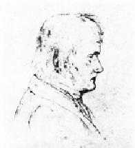
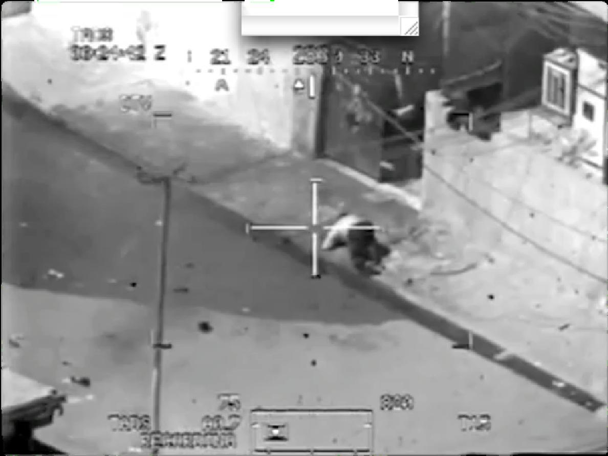

A comme animal disait Deleuze, dans son abécédaire et A comme artiste, ajoutons-nous. En cette quatrième saison involutive, nous revenons quelque peu à nos fondamentaux.
Pour comprendre un artiste, il faut entrer dans son monde. Idem, pour l’animal. La question déterminante étant celle du rapport à établir avec l’environnement pour en faire son monde propre.
On a toujours défini la bête par ce qui lui manque. On lui attribue toujours des définitions en négatif. L'animal est celui qui «n'a pas», celui à qui on a longtemps refusé à tort «parole, raison, expérience de la mort, deuil, culture, institution, technique, vêtement, mensonge, feinte de la feinte, effacement de la trace, don, rire, pleur, respect...».
Quant à l’homme, il est celui qui a. Mais quoi donc précisément, quel est ce propre de l’homme ? Comment redéfinir cette particularité qui le distinguerait de l’animal ? Cet animal que pourtant nous sommes. L'animal était là avant nous, est là près de nous, est là devant nous – qui sommes après lui. Il nous entoure. Et depuis ce poste, il se laisse regarder, sans doute, mais il peut, lui aussi, nous observer.
La question n'est pas : peuvent-ils raisonner ? Peuvent-ils parler ? Mais : peuvent-ils souffrir ? L’animal n’est pas mieux ou moins que nous, il est l’altérité absolue. Comme nous, les animaux sentent, souffrent, naissent, meurent et se reproduisent, ils se comprennent entre eux et ils nous font aussi comprendre ce qu’ils ont « à dire », et pas seulement par leurs voix. Or ce langage de l’animal qui me regarde ne me dit-il pas aussi : « Tu ne me tueras point » ? Centré sur lui-même, l’homme reste le plus souvent sourd à cet appel.
Notre rapport à l’animal est bien de l’ordre du pathologique, indéfendable donc dissimulé. Le questionner, le dévoiler, aurait pour conséquences vertigineuses d’exposer les valeurs et fondements économiques, éthiques, politiques, philosophiques, de la société humaine qui le met en place et le perpétue. Alors, que reste-t-il du propre de l’homme et du sale de l’animal, la frontière aujourd’hui est de plus en plus ténue.
L’art peut-être ?
En ce qui concerne l’art, peut-on considérer qu’un oiseau-jardinier qui peint en bleu sa chambre nuptiale en branchages avec des baies nous dévoile les sources du sentiment esthétique ? Si le « propre de l’homme » n’est plus de rigueur ces dernières années à un point tel que l’on se demande s’il en existe un en dehors de notre imagination et de notre orgueil, comment penser cette différence entre notre espèce et toutes ces autres avec lesquelles nous partageons notre espace-temps ? Si l’homme bénéficie de cette singulière aptitude à se transcender lui-même et à se mettre à la place d’autrui, cette empathie devrait trouver l’une de ses plus éloquentes expressions dans le souci qu’elle peut prendre pour le respect de l’Autre, qu’il soit humain, animal, végétal ou minéral.
L’artiste est devenu, en ces jours de crise, l’objet d’une grande chasse brutale et donc espèce à protéger. Voilà pourquoi, nous avons constitué un bestiaire particulier cette saison et nous aimerions que vous le visitiez avec toute l’ouverture nécessaire à cette confrontation. Couleurs, chants, postures, les trois bases de l’art à l’état pur.
Le regard de l’artiste comme le regard de l’animal, nous met à nu, il nous questionne sur nos fondements et nos limites, interroge constamment notre statut, notre identité et témoigne aussi des incertitudes de plus en plus fortes quant à notre véritable nature. Alors tous à poil et sans honte. Cette saison se veut fédératrice, sorte d’appel à tous ceux qui ne rangent pas, d’un côté l’Animal, de l’autre l’Homme, d’un côté la Science, de l’autre l’Art, d’un côté le philosophe et de l’autre le poète.
Monica Gomes et Fabien Dehasseler
Direction artistique
Ouverture les 18 et 19 septembre
Créations photographiques de la saison 14/15
de Hichem Dahes
Exposition
Vernissage le 18 septembre dès 19h
—
Foyer
La particularité des visuels et images contenus dans ce programme vous posera peut-être question. Cette saison, nous avons, en concertation avec Hichem Dahes, notre photographe associé et nos graphistes, décidé de travailler sur la gravure. Mais bien évidemment, il ne s’agissait pas de prendre une gravure libre de droit et de se la réapproprier, non, nous désirions en créer.
Gravure et animalité ont été le cadre premier imposé au travail photographique que Hichem Dahes allait développer avec chaque metteur en scène des créations de la saison 14-15.
Le résultat a ensuite été livré à nos graphistes qui y ont appliqué un tramage particulier donnant cette sensation de gravures aux visuels présents dans ce saisonnier. Lors de ce vernissage du 18 septembre, nous vous convions à venir découvrir les photos originales conçues par Hichem Dahes avant le traitement graphique appliqué ici.
Animalia
d’Isabelle Dumont
Conférence- Cabinet de curiosités
les 18 et 19 Septembre à 20h30
—
Foyer
—
1h20
—
Attention jauge limitée
La créatrice bruxelloise de théâtre Isabelle Dumont a concocté un « cabinet des curiosités » : une collection haute en couleur d’artificialia et de naturalia – des objets créés par l’homme ou issus du monde animal. Elle s’est laissé guider par son étonnement et partage son enchantement avec le public. Animalia s'aventure sur les terrains de la biologie et de l'éthologie mais aussi de la mythologie, de la philosophie, de la littérature, de la musique... Il y est question, entre autres, des crocodiles vedettes de Wunderkammer, du dodo disparu, de l'éphémère libellule, du bestiaire de la Voie lactée, du chant des oiseaux, des bêtes de sexe, des moutons qui ne sont pas si bêtes, des singes qui font des nœuds, du « propre » de l'homme qui pose question... Un voyage entre arts et sciences pour envisager le monde du vivant autrement.
Isabelle Dumont crée des spectacles de théâtre et de danse. Elle a réalisé un certain nombre de « conférences-spectacles-cabinets de curiosités », avec lesquels elle a été l’hôte, entre autres, du Kunstenfestivaldesarts.
Concept et interprétation
Isabelle Dumont
Collaboration technique
Filipa Cardoso
Avec le soutien du Musée de zoologie de l'ULB
Chant I : Tisser sa toile
Que fait l’araignée ? Patiemment, elle construit sa toile, y vit, la répare ou la reconstruit, et puis, elle meurt et sa toile s’effrite au vent. Mais d’autres tissages voient le jour, selon la même géométrie circulaire et de trame semblable. Cette toile peut s’apparenter à l’ouvrage d’un artisan dont le savoir-faire est transmis de façon hermétique, ésotérique presque secrète pour le profane. Cette conception est une machinerie complexe d’exploration, de guerre ou de défense, de conquête et d’exploitation, une projection de soi(e) permettant d’investir l’environnement. Entre deux points d’accroche, la belle à huit pattes tend un fil et par ce fil tendu, elle crée un évènement unique qui est l’empreinte de sa présence au monde, et qui, peut-être, restera après sa disparition ou pas et c’est aussi bien ainsi. Ce maillage, cette création, est une grille de lecture du monde qui l’entoure. Une sorte de plongeoir sur le vide qu'il faut investir pour ne pas sombrer. Un filet de sécurité qui autorise des jeux habituellement interdits. Oui, franchir le vide, c'est pour certains êtres vivants prendre la mesure du gouffre qui existe entre deux arbres distincts. Sans relâche, l’artiste arachnéen tisse sa toile, sorte de déterminisme, d’acharnement à reconstruire sans cesse au même endroit, selon les mêmes calculs, tel un « Spidermath » à la science mystérieuse et où l’ouvrage est cousu patte. L’araignée est, chez Deleuze, un sujet sur lequel il aime poser la question suivante : « Qu’est-ce qu’un monde ?»
Criss Cross
de Kyung-A Ryu
Création Danse
du 1er au 4 octobre à 20h30
—
Amphithéâtre
Criss Cross développe une écriture qui propose aux spectateurs une troublante « illusion visuelle ». La scène se transforme en zone rectangulaire, un espace quadrillé, dans lequel l’humain est projeté sans explosion dansée et qui permet l’émergence d’un « langage du silence ».
Il peut y avoir un certain enivrement à se laisser prendre au jeu des formes, comme face à certains tableaux de Mondrian. Par cette recherche chorégraphique et poétique, Kyung-A Ryu nous propose un voyage d’une audace inouïe, elle nous ouvre la voie de la gravitation, de la tension, de la flexibilité, de l’apesanteur … une réflexion sur l'espace qui permet au public une contemplation méditative.
Chorégraphie, scénographie et montage musique
Kyung-A Ryu
Assistanat
Julie Devigne
Interprétation
Nora Alberdi, Raffaella Pollastrini
Création lumières et régie générale
Olivier Vincent
Musique originale
Baudouin de Jaer - musique pour Geomungo
Une production de
Noodik Productions
En coproduction avec le Théâtre la Balsamine (la Balsamine fait partie du Réseau des Scènes chorégraphiques de la Commission Communautaire française de la Région de Bruxelles-Capitale),avec l’aide de la Fédération Wallonie-Bruxelles - Service de la Danse et le soutien de l'Espace Senghor et du Centre Culturel Wolubilis et de la Maison de la création centre culturel de Bruxelles Nord.
Chant II : Qu’est-ce qu’un monde ?
Comment créer un monde en soi, un monde à soi ou encore cette faculté d’être au monde ?
Selon Marcel Proust, le secret peut être enfoui dans une tasse de thé, dans ce petit bout de madeleine imbibée de tilleul et qui vous tient dans cette urgence permanente de créer un monde à p(art). Le tour de force consiste à restituer le mouvement de son univers sans le figer, avec un rien de désinvolture, rendre le cheminement labyrinthique des sentiers qui bifurquent, les changements de ton et d'atmosphère mais aussi l’érudition scrupuleuse, quelques plongées dans la psychologie des profondeurs et l'amour enfin.La richesse invisible du visible qui, du fond de son silence, conduit l’art à l’expression.
Qu’est-ce qu’on garde en nous et que concède-t-on à l’oubli ? La recherche du temps perdu, est-ce une recherche d’une vérité gravée dans le temps ?
Allons refaire un tour du côté de chez Swann: revoir les fleurs du jardin, le premier marcel que nous avons porté, revivre le drame du coucher, sentir le baiser de mamanet la tarte aux pommes sortant du four, l’odeur de l’herbe fraîchement coupée et même re-goûter les biscuits « zanimo » dont certains mangeaient les écureuils en premier (pour éviter que les lions leur fassent du mal à l’intérieur du paquet).
Ici, on entre dans des logiques proustiennes, on se remémore, on fait la part des choses entre perte et gain.
On interroge nos mémoires d’éléphant, ces encyclopédies du bric-à-brac et on se roule dans notre boue, ne serait-ce que pour se rafraîchir les idées.
Nos petites madeleines.
Du 13 au 26 octobre, nous explorerons ensemble tous les recoins de nos mémoires, nous tenterons de faire entrer la lumière dans certains retranchements obscurs de nos têtes frivoles. La mémoire, certes mais celle qui réintroduit du vivant. Entre répétition et remémoration, entre momification et recréation. Comment se souvenir alors que tout va plus vite ? Qu'est-ce qui sauvegarde le mieux les choses ? Comment raviver les « arts de la mémoire » ?
Pour créer la madeleine parfaite, n’oubliez aucun élément.
Ingrédients pour 18-20 madeleines:
-2 oeufs
-1 jaune d'oeuf
-120g de farine
-100g de sucre
-100g de beurre demi-sel
-une demie cuillerée à café de levure chimique
-au choix: zeste de citron, vanille en poudre, fleur d'oranger
« Désencombrer la toile du déjà-vu » (Bacon)
Le déjà- vu, déjà-entendu, déjà ressenti... Que la proposition soit numérique, verbale ou corporelle, réunir des artistes autour de cette réflexion de la mémoire, c’est convoquer une collectivité à réfléchir sur l’oubli sélectif, voir comment le filtre agit. Quels sont les choix qu’ont opérés nos cerveaux, voir ce qu’ils nous restituent.
Programme :
Partie 1 - Dans le cadre de la Quinzaine numérique 2014 : du 13 au 17 octobre
Lungs[the breather] de Laura Colmenares Guerra & Todor Todoroff/Installation immersive interactive de 19h à 20h – Foyer
Skinstrap à 20h30 suivi de Dualskin (Titre provisoire) à 21h30 de Thomas Israël/ Créations – Studio
La casserole identitaire - There is no Spoon de Thomas Israël
Installation - Galerie
le 18 octobre
Lungs[the breather] de Laura Colmenares Guerra & Todor Todoroff/Installation immersive interactive de 15h à 17h15 – Foyer
Workshop avec le collectif OSP dès 17h30 – Foyer
Partie 2 –
Le nu Civil de J-B Calame / Théâtre
les 20 et 21 octobre à 20h30–Amphithéâtre
Vieil de Jean Le Peltier / Théâtre
du 22 au 24 octobre à 20h30 - Foyer
Objets trouvés dans la recherche –une proposition d’Antoine Pickels à partir de l’œuvre A la recherche du temps perdu de Marcel Proust / Performances et lectures
le 24 octobre à 21h30 et le 25 octobre à partir de 17h - Amphithéâtre et Foyer
Lungs[the breather]
de Laura Colmenares Guerra & Todor Todoroff
du 13 au 17 octobre 2014 de 19h à 20h et le 18 octobre 2014 de 15h à 17h
Foyer - Attention Jauge très réduite- Inscription obligatoire
Lungs [the breather] est une installation interactive et immersive, qui explore les processus corporels involontaires. Ceux-ci sont rendus conscients par l’expérimentation de l’œuvre. L’expérience commence quand les participants entre dans l’espace de l’installation et s’assoient sur l’une des pierres. Un masque est disposé derrière chacune de celles-ci. Tous les participants prennent alors un masque et commencent à respirer dans celui-ci. Cette respiration provoque une réponse auditive et visuelle immédiate. Chaque participant se voit ainsi assigné quatre méduses...
Lungs [the breather] a reçu les soutiens à la production du Vlaamse Overheid et à la promotion de la Fédération Wallonie-Bruxelles: secteur des Arts numériques et les soutiens de ArTem, Nadine et Foam
Skinstrap
de Thomas Israël
du 13 au 17 octobre 2014 à 20h30 -
Studio – 35’
Dans la performance Skinstrap, Thomas Israël utilise son corps comme écran afin de nous raconter une histoire universelle de la couleur, suivi d'une autofiction à même la peau. Les thématiques chères à l'artiste - telles que la mémoire du corps, l'inconscient, le rapport au temps - sont traitées avec poésie dans un dispositif unique en son genre. Se plaçant dans la longue histoire artistique de "l'homme paysage" et des paysages anthropomorphiques, il la fait évoluer et en joue, grâce aux techniques actuelles de body-mapping interactif.
La musique originale et spatialisée de Gauthier Keyaerts, complice de longue date de l'artiste, apporte un degré d'immersion supplémentaire à cette plongée dans l’intérieur d'une psyché complexe et attachante, guidée par la voix de l'artiste.
Skinstrap créé à la Balsamine, a été présenté au Summerhall (Edinbourgh-Écosse) et au SESC Campinas et au SESC Ipiranga (Sao Paulo- Brésil) ainsi qu’au festival Vidéoformes (Clermont-Ferrand- France). A noter également que Skinstrap fait partie de la sélection du jury du très prestigieux Japan Media Art Festival, qui a eu lieu à Tokyo en février 2014.
Musique originale
Gauthier Keyaerts
Masque interactif / Cache
Yacine Sebti
Coproduction
La Balsamine
Dualskin (Titre provisoire) - Anamnèse d’une rencontre amoureuse
de Thomas Israël Création
du 13 au 17 octobre 2014 à 21h30- Studio
Petit historique humoristique de la sociologie du couple, masculin et féminin, sorte d’étude des genres sous-forme de strip-tease spirituel.
Quelle modification profonde peut émerger de la rencontre de ces altérités et du croisement de deux courants de conscience, de deux corps?
Comme dans Skinstrap, Thomas Israël utilise le corps comme un espace narratif pour conter les tiraillements et dévoilements internes. Ici, c’est la dualité qui est explorée.
Poésie, vidéo, performance
Thomas Israël
Éléments interactifs - programmation
Yacine Sebti - Création sonore: Gauthier Keyaerts
Performeuse
en cours
Coproduction La Balsamine avec la participation du CAS et le soutien du Conseil interdisciplinaire des Arts de la Scène (C.I.A.S) de la Fédération Wallonie-Bruxelles.
La casserole identitaire - There is no Spoon
de Thomas Israël- Installation
du 13 au 17 octobre 2014- Galerie de la Balsamine
Avec There is no spoon – la Casserole Identitaire, Thomas Israël insère le portrait individuel dans un portrait plus large, celui d’une communauté vivant la même expérience. Ainsi, le portrait filmé du visiteur curieux va se mélanger à d’autres visages, connus ou inconnus de lui. Ce portrait en mouvement permanent, où le “je” n’existe qu’avec l’autre, renvoie également aux notions d’impermanence et de dissolution de l’égo et compose, en direct, un groupe virtuel et multiculturel dans une excellente «soupe identitaire».
Avec le soutien de la Commission Arts numériques de la Communauté française de Belgique.
Workshop avec le collectif OSP
– Dont certains membres sont artistes associés à l’identité graphique de la Balsamine
Le 18 octobre 2014 Foyer de la Balsamine – Entrée libre à partir de 17h30
Vous avez toujours rêvé de les rencontrer sans jamais l’espérer. Oui, ce sont eux qui ont fait ce joli programme que vous tenez entre les mains et que vous lisez entre les lignes. Et si vous désirez leur poser des questions sur le pourquoi du comment, ce workshop entre autres choses peut-être le territoire idéal de ce futur échange. Nos graphistes sont artistes associés à la Balsamine, ils sont la peau de notre communication, une peau sensible et douce et qui transpirent de grosses gouttes de sueurs créatives sur nos terres brûlantes. Les rencontrer, c’est les adopter, donc venez découvrir ce collectif surprenant, engageant et engagé, empreint d’une poésie à tout épreuve contractuelle.
(Et là c’est à vous …d’y ajouter ce que vous comptez développer dans ce workshop)
Le nu civil de J-B Calame - Théâtre
les 20 et 21 octobre à 20h30 –Amphithéâtre
C’est le matin, le sommeil est passé faire son tri. Les protagonistes sont propres et démarrent la journée avec un petit déjeuner solide. Mais voilà qu’aujourd’hui la population civile apparaît un peu dissipée ; certaines personnes perdent leurs mots, d’autres leurs cheveux ; quelque-chose dans l’air semble agir au niveau atomique ; rien de spectaculaire ; plutôt quelque-chose comme un lent incendie sans fumée. Une sorte de « masse » envahit l’espace public, elle semble y brûler ses calories. Est-ce une simulation ? Une réalité ? Nos protagonistes doivent-ils prendre des mesures ? Ecouter leurs cœurs ? Une chose est sûre : ici, mieux vaut ne rien savoir.
Distribution
en cours
Une production Les Viandes magnétiques en coproduction avec la Balsamine.
Vieil
de Jean Le Peltier
du 22 au 24 octobre à 20h30 – Foyer- 40’
Une fable entre western et conte fantastique qui se raconte et se dessine à la fois.
Un comédien, d’abord seul entouré de blanc, avec près de lui une petite musique d’harmonium, illustre au fusain ce qu’il raconte. Il nous parle d’un vieux continent, comme d’un vieux géant, d’un vieil ami qu’on admire sans pouvoir ignorer tous ses défauts. Dans Vieil il y a un géant blessé à la clavicule, une maison en bois de sapins, un hibou grincheux, une vieille dame et un jeune homme amoureux. Dans vieil, il y a une jeunesse, une fraîcheur imparable qui donne à ce spectacle un âge d’or intemporel.
Création et interprétation
Jean Le Peltier
Production
Ensemble Blaue Blume
Dessin
Jean Le Peltiier
Objets trouvés dans la recherche
d’après l’œuvre de Marcel Proust –une proposition d’Antoine Pickels
le 24 octobre à 21h30 et le 25 octobre (horaire à confirmer) - Amphithéâtre et Foyer
&
Comme dans ces bureaux des objets perdus où patientent tant de fragments de vies égarées, qui semblent savoir déjà qu’ils ne reverront jamais leurs propriétaires et se résolvent à être adoptés par d’autres, au terme d’une année et un jour, une déambulation de quelques heures dans l’œuvre de Marcel Proust, saisie en images, vivantes, figées ou filmiques, en paroles incarnées ou enregistrées, en gestes répétés ou isolés, en pensées creusées, interrompues ou tourbillonnantes, en sons éclatés ou recomposés : les mensonges d’Albertine, les ballets de Charlus, les toilettes de la Duchesse de Guermantes, les exclamations de madame Verdurin, mais aussi les peintures d’Elstir ou la sonate de Vinteuil, l’apprêt de la serviette, le trébuchement sur le pavé, ou les bottines relacées, sans parler, qui sait, du goût de la madeleine, bribes échappées du Grand Livre et déposées dans les mémoires, retrouvées aujourd’hui, et partagées selon des modes aussi divers que ses lecteurs.
Avec (sous réserves)
Jacques André, Valérie Cordy, Fabien Dehasseler, Léa Drouet, Isabelle Dumont, Sabine Durand, Monica Gomes, Florence Minder, Anne Thuot, Karin Romer, Thomas Turine…
Chant III : Être aux aguets
Se désencombrer l’esprit, être vierge sur une terre neuve et effacer tout pour devenir l’animal que nous sommes dont l’instinct est profondément enfoui. Redécouvrir le goût, l’ouïe, l’olfactif, le toucher et sur cette base la plus radicale, sur la table rase ouverte à tous les concepts, se poster et se maintenir aux aguets. Saisir la révélation. Imiter le chien ou encore le chat sauvage aux oreilles continuellement mobiles. Rester dans cette « intranquilité », en alerte. Ressentir. Comme un accélérateur de désir, comme un intensificateur de vie. Marcher sans arrêt, les sens toujours en éveil, visiter, tâter, scruter, renifler, lancer un regard sur les côtés et repartir, en emportant tout, en transformant tout.
Bleu
d’Eleonore Valère Lachky
Création Danse
Du 24 au 27 novembre à 20h30
—
Amphithéâtre
Bleu pose le corps et ses bouleversements au centre de son propos.
La danse, surgie d'une exploration de soi, devient fil conducteur vers l'autre, et interpelle ce qui chez tous transporte, exulte, jaillit et meurt.
Ancrée dans l'humain, la pièce propose une expérience kinétique des oppositions qui nous fondent, terreau de notre équilibre.
Partir à la découverte du corps, c'est amener le regard à se poser sur ce compagnon à la fois intime et étranger.
C'est rencontrer sa merveilleuse capacité à "éprouver" et à exalter la mirobolante variété des rythmes, des formes, des intensités qui le traverse.
Bleu part à la recherche du geste juste, qui percute le monde et tisse la trame souterraine d'une communication directe et sans appel.
Chorégraphie
Eleonore Valère Lachky
Interprètes/Danseurs
Meytal Blanaru, Clara Furey, Martin Kilvady
Une production d’Eleonore Valère Lachky Company en coproduction avec le Théâtre la Balsamine et Charleroi-Danses, Centre Chorégraphique de la Fédération Wallonie-Bruxelles et le Cuvier CDC de Bordeaux, avec l’aide de la Fédération Wallonie-Bruxelles - Service de la Danse
Quizz
relier les bonnes réponses entre elles.
Bleu-Bleu
Etre bleu de quelqu’un
Avoir le sang bleu
Casque bleu
Col bleu
Colère bleue
Conte bleu
Cordon bleu
Être chocolat bleu pâle (expression belge)
Être dans le bleu
Être fleur bleue
La grande bleue
La planète bleue
L'heure bleue
L'or bleu
Steak bleu
Un bleu
un bleu
un bleu
une peur bleue
Un spectacle de Stéphane Arcas
être épris de quelqu'un
être d'origine noble
soldat de l'ONU
ouvrier
colère violente
discours mensonger
personne très habile en cuisine
être mal en point, avoir mal au coeur
être dans l'incertitude, être dans un rêve
être candide, être naïf
la mer Méditerranée
la planète Terre
moment qui précède l'aube
richesse représentée par la mer et le tourisme qui y est lié
steak grillé extérieurement mais cru à l'intérieur
combinaison de travail en toile bleue
jeune recrue à l'armée
un hématome
peur violente
Ô bleu dans « Voyelles » de Rimbaud
« Palsembleu, morbleu, ventrebleu, jarnibleu ! Dieu aussi a eu son époque bleue. » de Jacques Prévert, Extrait de Fatras
Chant IV : Les images font du bien à l’âme
LES IMAGES FONT DU BIEN À L'ÂME/LES IMAGES FONT DU BIEN À L'ÂME/LES IMAGES FONT DU BIEN À L'ÂME/LES IMAGES FONT DU BIEN À L'ÂME/LES IMAGES FONT DU BIEN À L'ÂME/LES IMAGES FONT DU BIEN À L'ÂME/LES IMAGES FONT DU BIEN À L'ÂME/LES IMAGES FONT DU BIEN À L'ÂME/LES IMAGES FONT DU BIEN À L'ÂME/LES IMAGES FONT DU BIEN À L'ÂME/LES IMAGES FONT DU BIEN À L'ÂME/LES IMAGES FONT DU BIEN À L'ÂME/LES IMAGES FONT DU BIEN À L’ÂME/ LES IMAGES FONT DU BIEN À L'ÂME/LES IMAGES FONT DU BIEN À L'ÂME/LES IMAGES FONT DU BIEN À L'ÂME/LES IMAGES FONT DU BIEN À L'ÂME/LES IMAGES FONT DU BIEN À L'ÂME/LES IMAGES FONT DU BIEN À L'ÂME/LES IMAGES FONT DU BIEN À L'ÂME/LES IMAGES FONT DU BIEN À L'ÂME/LES IMAGES FONT DU BIEN À L'ÂME/LES IMAGES FONT DU BIEN À L'ÂME/LES IMAGES FONT DU BIEN À L'ÂME/LES IMAGES FONT DU BIEN À L'ÂME/LES IMAGES FONT DU BIEN À L’ÂME/ L’image, dans la mesure où elle atteint sa plénitude, fait du bien à l’âme, elle augmente l’être, elle nous fait croître en quantité et en qualité./LES IMAGES FONT DU BIEN À L'ÂME/LES IMAGES FONT DU BIEN À L'ÂME/LES IMAGES FONT DU BIEN À L'ÂME/LES IMAGES FONT DU BIEN À L'ÂME/LES IMAGES FONT DU BIEN À L'ÂME/LES IMAGES FONT DU BIEN À L'ÂME/LES IMAGES FONT DU BIEN À L'ÂME/LES IMAGES FONT DU BIEN À L'ÂME/LES IMAGES FONT DU BIEN À L'ÂME/LES IMAGES FONT DU BIEN À L'ÂME/LES IMAGES FONT DU BIEN À L'ÂME/LES IMAGES FONT DU BIEN À L'ÂME/LES IMAGES FONT DU BIEN À L’ÂME/
Käthchen de Heilbronn ou L’épreuve du feu
Sabine Durand d’après la pièce éponyme de Heinrich von Kleist
Création Théâtre
du 3 au 14 février à 20h30 (relâche dimanche et lundi)
—
Amphithéâtre
Frappé de mélancolie morbide, le comte de Strahl ne désire plus que la mort. Dans un rêve fiévreux, cependant, un ange lui désigne une très jeune fille qui l'aime et qui est fille d'empereur. À son réveil, il lui faudra toute l'ardeur et la foi du chevalier pour déjouer les plans de la vénale Kunigunde et remonter le fil de son désir jusqu'au cœur de la nuit. Car c'est là que brille la vérité plus éclatante que le soleil et la possibilité de son salut. Dans Käthchen de Heilbronn, l'amour est amour d'absolu, force ultime d'insoumission qui proteste de voir l'être assigné à comparaître dans un monde sans élasticité.
Rangé par facilité historique parmi les romantiques allemands, Heinrich von Kleist (1777-1811) n'en demeure pas moins un poète inclassable engagé dans la tâche délicate et démesurée du dévoilement de son âme. Dès lors, son entreprise littéraire le conduit inéluctablement sur les voies d'une iconoclastie radicale.
Un spectacle de SIX-65 compagnie en coproduction avec le Théâtre la Balsamine, avec l'aide du Ministère de la Fédération Wallonie-Bruxelles, service du Théâtre et le soutien du Centre des Arts Scéniques
La compagnie SIX-65 a été fondée en 2004 par Sabine Durand.
À cette époque, la compagnie occupait une ancienne manufacture dans le centre de Bruxelles et c'est là qu’ont été créées et représentées ses deux premières créations. Par la suite, SIX-65 a travaillé avec diverses institutions : le Théâtre la Balsamine, le Théâtre de la Place (festival Émulation), différents centres culturels de Wallonie, le festival Premiers actes en France.
La compagnie Six-65 développe un travail de création libertaire à partir d'œuvres issues du répertoire*. Les objectifs artistiques de la compagnie, vis-à-vis de ces textes, ne vont pas dans le sens d'une réédition de la tradition théâtrale qui les a fait connaître. Au contraire, les œuvres choisies sont traitées comme des plaques radiographiques susceptibles d'examiner le corps de la modernité et se révèlent des outils percutants dans l’introspection de l'imaginaire moderne.
C'est dans la tension formelle entre la sensibilité artistique contemporaine de Sabine Durand et l'imaginaire collectif dont une œuvre d'ampleur historique est porteuse que se manifeste la dramaturgie et les lignes de force de chaque projet.
Dans cette démarche, la place de la direction d'acteur est prédominante. L'interprète est au centre des projets élaborés, l'impulsion artistique se fait toujours à partir d'une connexion fantasmée entre l'interprète et la matière.
* Affabulazione de P.P. Pasolini et Cid d'après Corneille (prix du jury international au festival Émulation, Liège 2006). Ont suivi ensuite, en 2009, D'Oedipe d'après Oedipe Roi de Sophocle et, en 2012, Le banquet dans les bois à partir de fragments tirés de deux pièces de Shakespeare : Titus Andronicus et Comme il vous plaira.
LES IMAGES FONT DU BIEN À L'ÂME / LES IMAGES FONT DU BIEN À L'ÂME / LES IMAGES FONT DU BIEN À L'ÂME / LES IMAGES FONT DU BIEN À L'ÂME / LES IMAGES FONT DU BIEN À L'ÂME / LES IMAGES FONT DU BIEN À L'ÂME / LES IMAGES FONT DU BIEN À L'ÂME / LES IMAGES FONT DU BIEN À L'ÂME / LES IMAGES FONT DU BIEN À L'ÂME / LES IMAGES FONT DU BIEN À L'ÂME / LES IMAGES FONT DU BIEN À L'ÂME / LES IMAGES FONT DU BIEN À L'ÂME / LES IMAGES FONT DU BIEN À
Sur Kleist
Il y a quelques poètes —et ceux-là nous sont plus chers que les autres— dont l'œuvre semble être le radeau qu'ils conçoivent, sur lequel ils sont montés et qui, seul, les maintient hors de l'eau. Chez ces poètes, la mort, psychique ou réelle, est toujours très proche. Ils n'accomplissent pas, en écrivant, un acte dangereux : ils se sauvent du péril en écrivant et, très souvent, ils périssent malgré tout. Reste l'œuvre qui, elle, pour l'éternité, prendra la forme d'une épitaphe : « ci-gît un poète ».
Leur œuvre est écrite sur le verso de la vie et la lire, c'est pénétrer dans un territoire conquis sur la mort. Kleist est de ceux-là.
Chant V : Se déterritorialiser
De manière plus ou moins systématique, à la Balsamine, il se pratique un certain mélange des genres, un décadrage sujet à interprétation et à l’interpénétration.
Il s’y pratique un art où la danse, le théâtre, la musique ont leurs entrées dans la littérature, le cinéma, le cirque, la peinture, la vidéo, le conte … au point qu'on ne peut jamais savoir si un son, un mouvement ou même un accessoire ne sont pas finalement des sésames nous permettant une ouverture sur d’autres territoires, d’autres points de « voir ». Adopter volontairement un regard autre répond à une exigence de réflexivité. Il ne s’agit pas de voir pour croire, comme dans l’Évangile, mais de voir pour comprendre, pour se comprendre : en extension, en immersion, en isolement complet, en toutes circonstances, partout. Mais c’est aussi pousser la langue en dehors de ses limites, proche de la bête qui meurt, proche de l’inhumanité. Se déterritorialiser, se confronter à nos dichotomies: matérialité et immatérialité, spatialité et temporalité, nature et culture, espace et société, global et local, mouvement et stabilité. Le grand dilemme de ce début de siècle est celui de la multi-territorialisation, l’exacerbation de cette possibilité d’expérimenter différents territoires en même temps, en reconstruisant constamment le nôtre.
cOMMENT dIRE
Léa Drouet
Création théâtre
du 24 février au 4 mars à 20h30 (relâche samedi et dimanche)
—
Studio
OMMENT dIRE, comment traduire la genèse de cette création ?
Au départ, il y a un poème en prose de Danielle Collobert (tiré de son recueil de poèmes intitulé Meurtre et édité chez Gallimard). Ce poème s’apparente au récit d’un cauchemar à la fin tragique : un homme est mystérieusement immobilisé au centre d’une place carrée sans issue et finit par se consumer, encerclé par des personnages en noir, des insectes et des mollusques.
Ensuite, cOMMENT représenter ? cOMMENT traduire ce choc de la lecture avec les éléments composant la représentation théâtrale: les acteurs, le créateur lumière, le compositeur, la metteure en scène, les techniciens du spectacle mais aussi les spectateurs présents dans cette salle, le théâtre et son bar… créer une mise à plat du texte poétique dans un contexte présentifié.
cOMMENT dlIRE met à nu les outils qui servent la fabrication de l’illusion théâtrale et explore ses limites. En ce sens, cette expérience interroge le lieu clos de la fiction et propose d’étendre son territoire jusqu’à l’espace punotenoteblic. Un renversement du tragique par l’imaginaire.
Concept, mise en scène et scénographie
Léa Drouet
Avec
Céline Begbeder, Heidi Brouzeng, Nicolas Patouraux, Rachel Sassi
Création lumières
Matthieu Ferry
Musique et composition
Jean-Philippe Gross
Interprétation studio violoncelle
Aude Romary
Une production de Léa Drouet en coproduction avec le Théâtre la Balsamine et le CCAM Scène Nationale de Vandœuvre-lès-Nancy et avec l’aide du Ministère de la Fédération Wallonie-Bruxelles, service du Théâtre.
« J’ai longtemps pensé que la fuite dans l’imaginaire était la seule solution pour se défendre du réel. Faire du théâtre était pour moi proposer un cadre dans lequel il était possible d’être provisoirement hors d’atteinte des normes et valeurs prédominantes. Il était aussi le lieu où le désespoir pouvait être déréalisé, costumé pour ainsi dire, dans le but d’être plus supportable. Mais, dans une volonté nouvelle de croire que l’imagination ne se limitait pas à la fabrication de cellule d’isolement ou de repli face à un réel insatisfaisant, j’ai alors envisagé la fonction imaginative dans une nouvelle perspective.
Imaginer c’est aussi pouvoir agir sur le réel et pouvoir le modifier, c’est avoir conscience de la malléabilité d’une réalité que nous pouvons transformer.
De ce point de vue l’imagination - et tout ce qui la stimule, la suscite ou l’utilise - est alors une arme de défense, un outil qui permet de se défendre du réel non pas seulement de le fuir en fabriquant un monde hors réalité, une utopie sans réalisation, mais un outil qui fabrique du possible, du ce qui n’existe pas encore.
Je voudrais par la création de cette représentation théâtrale explorer cette fonction de l’imagination comme pouvoir d’action à modifier une certaine réalité. »
« La place était complètement déserte, à cause de la chaleur. Une lumière intolérable.
Seulement, sur la gauche, une mince bande d’ombre découpée selon la hauteur des maisons. Quand on y arrive, par le sombre couloir voûté qui mène là, il faut s’arrêter net.
Impression de pleine fournaise ; mais en même temps, une certaine légèreté, une pensée d’évaporation.
Une petite cloche tinte, comme à l’intérieur d’une église. Dans l’embrasure de chaque porte se tiennent, immobiles, des personnages en noirs, des veilles femmes surtout. La place est fermée comme un cirque, ou une arène — comparaison qui ne tient d’ailleurs qu’à cet aspect de lieu clos, car sa forme propre tend vers un carré presque parfait. Parfois des gens entraient dans la place, s’apercevaient qu’il n’existait aucune issue, et reprenaient le même chemin sous le regard lourd des gens de la place.
Certains n’osaient pas y pénétrer ; des timides, des oppressés. Ceux qui entraient là étaient semblables à des mouches sur une toile d’araignée. Le passage ne se faisait pas brutalement. Ils passaient de l’ombre de la ruelle à l’éblouissement de la place. Ils fermaient les yeux et continuaient à marcher. Lorsque leurs paupières s’ouvraient par soubresaut, alors déjà, il était trop tard. »
Danielle Collobert s'est donné la mort à 38 ans.
Enfonçures
de Didier-Georges Gabily, mise en scène de Caroline Logiou
Création théâtre
Du 24 au 28 mars à 20h30
—
Amphithéâtre
De la première guerre du Golfe à Hölderlin
En 1991, il y a cette guerre qui commence et dont parle la pièce Enfonçures: la première guerre du Golfe. Cette guerre que l’on a suivi à la télévision chaque soir, dans une quasi simultanéité des faits. Une guerre au visage contemporain, une guerre technologique, une guerre à distance, où il suffit de viser juste et d’appuyer sur un bouton, comme sur la manette d'un jeu vidéo pour gagner la partie. Ni cadavres, ni désolation, le bombardement de Bagdad ressemble à un grand feu d’artifice. Images hypnotiques de nuit. La distanciation observée et ralliée par une grande majorité des médias pendant cette guerre du Golfe nous dévoile cette fabrique d’illusions.
Cette mise à distance est l’expression d’une virtualité de plus en plus intense dans les relations humaines.
"Et des poètes, à quoi bon en ces temps d'indigence?" questionne Hölderlin.
Enfonçures juxtapose une double fable: les dernières années de la vie du poète allemand Hölderlin alors qu’il sombrait dans la folie avec les premiers jours de la guerre du Golfe. Ces deux sujets s’emmêlent reliées par un point commun: la perte de la réalité.
Dans Enfonçures, la voix de Gabily s’exprime, comme en écho au poète allemand, Hölderlin. Les deux figures se confondent et questionnent la place du poète, de l'artiste dans notre société.
"Voilà.
Un de ces poèmes impassibles qui aident à supporter le vivre. Dit‐on."
Mise en scène
Caroline Logiou
Avec
Marie Bos, Pedro Cabanas, Didier Poiteaux
Création sonore
Thomas Turine
Vidéaste
Damien Petitot
Scénographie
Raquel Morais
Une production de Nu asbl en coproduction avec la Balsamine.
Didier-Georges Gabily (1955-1996), écrivain, metteur en scène français
"Enfonçures", qui est, dit le dictionnaire, un creux, une dépression
Didier-Georges Gabily a consacré toute sa vie à l'écriture, au théâtre et aux acteurs. Il a d'abord longtemps écrit en dehors du théâtre : "L'écriture était dominante au départ, elle l'est toujours", disait-il. Issu d'un milieu "très prolétarien", il rencontre le théâtre par hasard. Tout d'abord acteur, puis chanteur à l'essai avant de devenir assistant et enfin metteur en scène en 1978 lorsqu'il crée "Tambours dans la nuit" de Bertolt Brecht. Didier-Georges Gabily n'a jamais perdu le contact avec l'écriture et les acteurs, même lorsqu'il traversait ses longues périodes d'errance. Après les mises en scènes de "L'Echange" de Paul Claudel en 1986, puis "Ossia" en 1989, puis surtout, en 1991, de"Violences", dont il est lui-même l'auteur, il s'adonne à la création de ses propres textes. En 1992, ce furent "Des Cercueils de zinc" au Théâtre de la Bastille, suivi, en 1993, d'"Enfonçures" au Festival d'Avignon. Sa dernière mise en scène fut "Gibiers du Temps" (1994-1996). Il décède brutalement pendant les répétitions du diptyque qu'il devait créer juste après : "Dom Juan" suivi de "Chimère et autres bestioles".
Hölderlin – poète allemand(1770‐ 1843)

De 1807 à 1843, à Tübingen, il est dans la tour du menuisier Zimmer. La nuit, il en monte et descend l’escalier. De la tour, il voit les montagnes, les forêts et le fleuve Neckar, qui coule sans jamais lui dérober ses pensées. Il parle peu et s’il le fait c’est en plusieurs langues.
« L'opération militaire "Tempête du désert" contre l'Irak débute le 17 Janvier 1991. C'est mon anniversaire, j'ai 12 ans. Je regarde les images de la première guerre du Golfe à la télévision, je suis captivée. Pas de sang, pas de blessés, pas de morts. Il n’y a que des bombes qui explosent sur des cibles stratégiques telles que routes, ponts, barrage, centrales électriques…
Une « guerre propre » donc, ou qui en donne l’illusion. Une guerre nocturne où les frappes aériennes sont nombreuses et hypnotisent par leur répétition. Le ciel est saturé d’explosions. Je regarde la guerre en train de se faire, fascinée par le rythme des bombes qui tombent au sol. C’est l’une des premières fois, où l’on peut suivre la guerre en direct à la télévision.
En 2014, je me demande où se situe la vérité de ces images. Pas de sang, pas de blessés, pas de morts : difficile de concevoir que la réalité de la guerre fût cela. »

Être(s) ou le Jardin d’Eden
de Céline Ohrel
Théâtre – Étape laboratoire
Le 31 mars et le 1er avril à 20h30
—
Studio
Après l’Enfant Zéro que nous avions soutenu lors de la saison 12-13, Céline Ohrel revient nous proposer une forme transitoire avant création. A travers son écriture et son sens aigu de la mise en scène, elle s’attarde en ce jour sur une réflexion pertinente autour de l’identité : comment “être soi” dans une société de l’image et de la marchandisation ? Qui sommes-nous et quels sont nos choix, en quoi sont-ils les fragments de notre « essence » ?
Être(s) aborde les conflits d’identités personnelles et élargit le débat au couple, au collectif ; les êtres face aux grands bouleversements de leur vie dans une société de consommation paradisiaque et éternelle, à la dérive de leur déterminisme premier.
Choisir ? Mais que choisir ?
Ainsi, l'histoire commencerait dans la cafétéria d'un centre commercial, dans ce genre d'endroit, conçu pour qu'on s'y sente bien, à l'ombre d'arbres en résine et d'écrans plasma, au cœur d'une nature inconnue mais toujours agréable. Il y a même une connexion wifi et la serveuse est assez jolie. Il y aurait deux êtres humains assis à une table, l'un porte dans son ventre un autre être humain. Et il doit annoncer à l'autre quelque chose. Quelque chose qui nous pousse à la limite de ces êtres humains...Tout en buvant un soda, ils vont devoir prendre une décision qui les dépasse de très loin...
Et si l’angoisse de choisir sa vie était notre plus grand trésor? Et si tout ceci n'était qu'un jeu, un jeu dont nous sommes les héros ?
Chant VI : Le comique
Le comique serait-il vraiment le procédé propre de l’implosion de tout ordre établi et viserait-il l’éclat d’ une réalité dominante ?
Évidemment, proposer du comique dans une saison, à la Balsamine, cela peut paraître soudainement racoleur. On pourrait nous traiter de populistes, venir brûler le théâtre ou encore perdre certains spectateurs, ceux qui espèrent avant tout être surpris et désarçonnés par des propositions artistiques risquées voire expérimentales ? Et là, cela ne serait plus drôle. Voilà pourquoi, nous tenons à vous rassurer, nous ne tomberons pas dans le piège du comique bien gentil, ici, nous pataugerons dans la gadoue, dans une certaine « merditude » des choses. Tout peut passer avec le second degré, d’ailleurs Malraux ne disait-il pas : « Le 21ième siècle sera spirituel ou ne sera pas » ? Oui, my comic is rich : situations grasses, répétition dépassées avec maestria, dialogues découpés aux oignons farcis, hystéries cadrées avec classe, bestiaire parfait, pipi-caca en surdosage et casting d’élite: des comédiens et comédiennes encore inconnus ou méconnus mais létaux ici (en ce sens qu’ils peuvent vous faire mourir de rire) !
L’écolier Kévin
de J-B Calame
du 21 au 25 avril à 20h30
—
Amphithéâtre
C'est l'histoire d'un papa qui a perdu sa femme et son travail. Heureusement, il lui reste son fils Kevin, encore adolescent. Cette famille décomposée parviendra-t-elle à se reconstruire ?
L’écolier Kevin nous repose férocement ces vieilles questions enfouies : Que voulons-nous pour nos enfants ? Quelles valeurs sommes-nous aptes à transmettre ? Quel modèle de vie présentons-nous ?
Texte et mise en scène
Jean-Baptiste Calame
Avec
Charlotte Bouriez, Dimitri Calame, Emile Falk-Blin, Fabien Magry, Rehab Méhal et Morgane Naas
Une production Les Viandes magnétiques.
« La compagnie Les Viandes magnétiques est un groupe de jeunes crétins qui font semblant de faire du théâtre, qui ont choisi le théâtre comme voie de garage et sont en Belgique afin de profiter du chômage à vie. Plus proche du parasite social que de l’artiste, ces jeunes crétins ont décidé de constituer la compagnie Les Viandes Magnétiques afin de donner un visage officieux à leur bêtise. Ils produisent des spectacles bas de gamme, proches de la masse, qu’ils vendent comme le boulanger vend son vin. Leur objectif est de conquérir le marché du théâtre populaire en Europe. »
« L’écolier Kévin, en tant qu’enfant de l’Union européenne, vient illustrer telle une incarnation culturelle, l’idéologie de l’Union. C’est une forme d’Hamlet moderne, fédérateur, qui nous rappelle qu’ici aussi, dans le royaume de l’Union, il y a quelque chose de pourri. »
Chant VII: Devenir
Devenir-autre. Expérimenter.
Prendre des risques.
Ajouter une couche, une multiplicité de couches.
Ecouter sa propre langue devenir étrangère.
Sortir un peu de ce corps qui nous emprisonne, convoquer d’autres forces, d’autres altérités.
Développer un mouvement, une vague qui vous emporte au-delà de vous.
Travailler aux limites du dire et du faire, s’accrocher à l’impossibilité et par-là formuler de nouvelles syntaxes.
Devenir inclassable.
Devenir « riche de ses virtualités » .
Sortir des sociétés de contrôle et grandir.
Forcer le trait car au bout de cette tension troublante en nous, il y a toujours du sens.
Révéler l’évènement, faire sortir le fantôme de la maison, celui qui déconcerte et étonne, celui qui est inprogrammable.
Lutter et se servir de cette volonté pour atteindre son idéal.
Devenir involutioniste
Devenir féminocrate
Devenir hebdromadaire
Devenir allégorille
Devenir dyslextique
Devenir lycanthropophage
Devenir collaborantin
Devenir nymphographiste
Devenir ptérodactylo
Devenir photohygiénique
Devenir mannequintoche
Devenir anarchiviste
Devenir biblioteckel
Devenir hamsterdame
Devenir ovnithorinque
Devenir transgénie
Devenir googueuleur
Devenir twitterroriste
Devenir appeaulogiste
Devenir nikonoclaste
Devenir haleinologue
Devenir hantologiste
Hantologie
de Samuel Lefeuvre
Création Danse
du 29 au 2 mai à 20h30
—
Amphithéâtre
HANTOLOGIE est une cérémonie moderne, un spectacle/rite, au cours duquel les spectateurs comme les acteurs sont au cœur d’un dispositif circulaire et déambulatoire. Une expérience chorégraphique, sonore et participative.
Hantologie veut ouvrir un espace de transition, lieu de déliaison et de liaison ; espace de sens aussi et de renouveau donc de révolution. Hantologie déterre les archives et les expose à cieux ouverts, et dans cette convocation particulière, dans ce rassemblement, plateforme nouvelle, réseau social éphémère, revient aux questions qui nous inspirent de tout temps :
Qu’est-ce qu’exister ?
Qu’est-ce qu’une substance ?
Qu’est-ce qu’un tout ?
Qu’est-ce qu’une relation ?
Qu’est-ce que la dépendance ?
Qu’est-ce que la causalité ?
Qu’est-ce qu’une propriété ?
Qu’est-ce qu’un état ?
Qu’est-ce que l’identité ?
Une approche « hantologique » et corporelle de la connaissance par les traces et la construction d’une mémoire collective spontanée.
Chorégraphie et interprétation
Samuel LEFEUVRE et Florencia DEMESTRI
Création musicale
Raphaëlle LATINI (platines) et Mathias DELPLANQUE (ordinateur)
Création lumière
Nicolas OLIVIER
Scénographie et costumes
groupe ENTORSE
Game designer
Manuel ROZOY
Coach vocal
Valérie JOLY
Une production dugroupe ENTORSE (FR) et de LOG asbl (BE)en CO-PRODUCTION avec la Scène Nationale 61 (FR), l’ Atelier de Paris-Carolyn Carlson (FR), la Balsamine (Bruxelles, BE), le Relais Culturel Régional du Pays de Falaise (FR), The POINT – Eastleigh (UK), CNDC Angers (FR)
LE CENTQUATRE - PARIS (FR)
Ce projet bénéficie du soutien de la DRAC de Basse-Normandie, du Conseil Régional de Basse Normandie, du Conseil Général du Calvados et de la Ville de Caen.
Démarche artistique du Groupe ENTORSE:
Depuis 2007, Raphaëlle Latini et Samuel Lefeuvre collaborent avec différents artistes (danseurs/comé diens/designer lumière) pour créer des spectacles, des performances qui mêlent, rapprochent cho régraphie, musique et scénographie. Dans une dynamique de collectif, ils questionnent la place de chacun des intervenants, pour déplacer l’attention du spectateur et donner au travail des matières musicales, scénographiques et lumineuses une place aussi importante que les états physiques traités dans la chorégraphie.
Historique des créations :
LOVE AFFAIR, green girl - création 2008 - Théâtre de la Renaissance - Mondeville
MORCEAU - performance 2010 - Festival 360° - Saint Brieuc
ACCIDENS (ce qui arrive) - création 2010 - Forum - Falaise
[àut] - création 2012 - Festival June Events, Atelier de Paris/Carolyn Carlson - Paris
HAUTE RÉSILIENCE - performance 2013 - Festival Séquence Danse -CENTQUATRE – PARIS
Chant VIII: Process
Pauvre et informe festival / Le PIF - en juin 2015
Finir en beauté en présentant des choses « informes ». Est-ce que ce n’est pas contradictoire ? En tous les cas, il s’agira de mettre un point d’orgue à la saison 14-15. Petit cocon en suspens, non programmé à ce jour et qui viendra ponctuer cette aventure.
Sons, odeurs, mouvements, couleurs, formes, champs électriques, radiations thermiques, ondes de toute espèce, signaux chimiques, etc. Bref, des signes de vie ! Créer, c’est être pris dans un processus. Ces territoires ne peuvent pas être anticipés car ils n’existent pas encore !
Public /Rencontres
Les After-Shows
Toutes les deuxièmes représentations des créations à la Balsa, le prix des places est à 6€ pour tous et en après-spectacle, nous vous proposons une rencontre avec l’équipe artistique
Petite particularité, cette rencontre est menée par un autre artiste de la saison.
Criss Cross, le jeudi 2 octobre 2014
Skinstrap/Dualskin, le mardi 14 octobre 2014
Vieil, le jeudi 23 octobre 2014
Bleu, le mardi 25 novembre 2014
Käthchen, le mercredi 4 février 2015
cOMMENT dIRE, le mercredi 25 février 2015
Enfonçures, le mercredi 25 mars 2015
Êtres, le 1er avril 2015
L’écolier Kévin, le mercredi 22 avril 2015
Hantologie, le jeudi 30 avril 2015
Les ateliers Balsa : les slowdatings, des rdv privilégiés artistes/public
Nous vous invitons certains samedis de 17h à 19h à participer à un atelier pratique mené par un artiste de la saison. Il vous sera ensuite possible de vous restaurer et d’assister à une représentation dès 20h30. La participation à ces ateliers est gratuite mais nécessite une réservation.
Le 4 octobre : atelier avec Kyung-A Ryu
Le 7 février : atelier avec Sabine Durand
Le 28 mars : atelier avec Caroline Logiou
Le 25 avril : atelier avec Jean-Baptiste Calame
Le 2 mai : atelier avec Samuel Lefeuvre
Informations pratiques
Prix des places
(Faire un tableau)
Tarif plein 15€ - Prévente 12€
Tarifs réduits* 9€ - prévente 6€
*étudiants, +de 60 ans, demandeurs d’emploi, professionnels du spectacle, schaerbeekois
Tarifs étudiants en écoles supérieures artistiques 5€
Jamais deux sans toi : 6 € pour tous, lors de la deuxième représentation de chaque création !
Ne manquez pas cette occasion unique d’être au plus près de l’œuvre puisque nous avons décidé de permettre à notre public de voir un spectacle et de connaître les secrets du processus de création dans la foulée. Un spectacle, une rencontre, un prix plancher, c’est la Balsa tout craché !
Art. 27 et Arsène 50
Tarifs de groupe :
Groupe adulte (à partir de 10 personnes) : 10€ la place+ 1 place offerte à l’organisateur
Groupe étudiant (à partir de 10 personnes) : 6€ la place + 1 place offerte à l’enseignant
Le paiement des réservations de groupe doit s’effectuer 10 jours avant la date de représentation choisie.
Tarif Mécène : 20 €
Etre Mécène, c’est participer à la pérennité des fondamentaux de la Balsamine que sont l’échange, le dialogue, la création et l’enjeu artistique et expérimental. C’est soutenir la création artistique qui y est défendue, c’est reconnaître et accompagner une politique qui soutient les jeunes artistes.
C’est vous associer à ce pari de la jeunesse et de la rencontre des savoirs entre des artistes issus de différentes disciplines.
C’est avoir l’opportunité unique de vous impliquer dans un questionnement perpétuel sur la place et le sens de la personne humaine et de l’art et la culture dans notre société moderne.
En ces temps de coupes budgétaires et de morosité ambiante, face à la crise, être mécène est un geste militant et politique !
La Carte « Balsaccro»
(Faire un encart)
Pourquoi ne pas devenir « accro »?
Pour seulement 3 spectacles vus, la Balsa vous offre le 4e spectacle !
Cette carte de fidélité est non-nominative et fonctionne pour tous les spectacles de la saison hormis pour les spectacles du Festival Noël au Théâtre et du Kunstenfestivaldesarts. Dès votre première venue au théâtre, demandez votre carte !
Notre Pass
(Faire un encart)
Un pass ?
Un pass avec des surprises ?
Ne faites pas l’impasse, contactez, au plus vite, Laura Vauquois au 02 735 64 68 pour plus de renseignements.
Pass quand tu veux, donne accès aux 14 spectacles de la saison (hors Noël au théâtre et KunstenFestivaldesArts)
Tarif plein 70€ (soit 5€ la place)
Tarif réduit 50€ (soit 3.6€ la place)
Tarif Etudiants en art 40 € (soit 2.8€ la place / moins de 3 € la place)
Les pass sont nominatifs, réservation des places à tout moment au cours de la saison (sous réserve des places disponibles !)
La personne accompagnant le détenteur d’un Pass bénéficie du tarif réduit 9€ / prévente 6€
Infos et réservations
- Via notre site internet (réservation possible 24h/24): www.balsamine.be
- Au 02 735 64 68, du lundi au vendredi, de 14h à 18h, Laura Vauquois prend vos réservations ou vous donne des renseignements complémentaires.
En dehors de ces heures et le week-end, un répondeur prend vos réservations.
- via notre adresse e-mail: reservation@balsamine.be
Moyens de paiement et retrait des places
Préventes et ventes
- par virement bancaire au numéro de compte suivant :
IBAN BE15 0680 6267 2030
BIC : GKCCBEBB
Attention, pour bénéficier du tarif prévente, votre virement doit nous être parvenu 48h avant la date de représentation choisie. Il est donc vivement conseillé de faire le virement 5 jours avant cette date.
- à la billetterie, ouverte tous les soirs de représentations, dès 19h.
Paiement cash, Bancontact, Visa et Proton.
Retrait des places
Les places (jetons d’entrée) sont à retirer le soir-même de la représentation.
Les places réservées doivent être retirées avant 20h15. Au-delà de cette limite, elles pourront être remises en vente.
Administration 02 732 96 18
Bar et restauration
Le bar est ouvert à 19h chaque soir de représentation.
Une petite restauration délicieuse et faite sur place vous est proposée avant et après chaque spectacle.
Tous les chemins mènent à la Balsa
L’équipe
Monica Gomes & Fabien Dehasseler
Direction générale et artistique
Laurent Henry
Directeur financier et administratif
Fanny Arvieu
Coordination générale/ Communication / Accueil compagnies
Isabelle Colassin
Relations publiques / Médiation artistique écoles et associations
Laura Vauquois
Promotion / Réservation
Martine Wijckaert
Artiste associée
Jef Philips
Directeur technique
Hichem Dahes
Photographe associé
Open Source Publishing
Designers graphiques associés
Partenaires
La Balsamine est subventionnée par la Fédération Wallonie-Bruxelles et fait partie du réseau des Scènes chorégraphiques de la Commission Communautaire française de la Région de Bruxelles-Capitale.
La Balsamine reçoit aussi le soutien de Wallonie-Bruxelles Théâtre/Danse, de Wallonie-Bruxelles International et du Centre des Arts Scéniques.